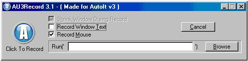

Overview
This tool is a customised version of Larry's AU3Record which will translate the keystrokes and mouseclicks made by the user into AutoIt code and save it in the file currently open in SciTE.
Running Au3Recorder
Press Alt-F6 or select from the <Tools> menu

Optionally select the program to run before recording starts and then click on the "Record" button.
Once you have finished pointing, clicking and typing, press the "Stop" button.
The resulting code will be inserted into the active script